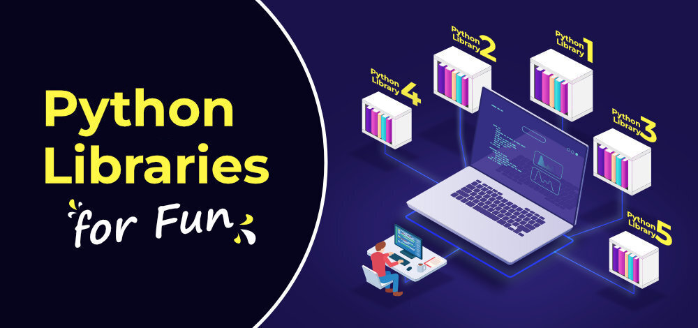
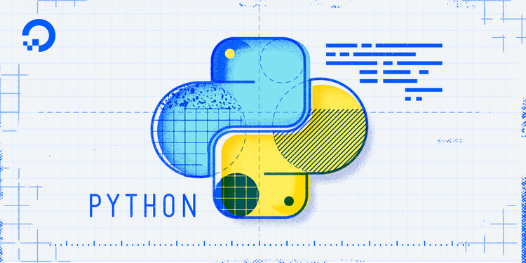

Unlock the power of Python! Dive into the world of programming and bring your ideas to life with clean, elegant code.
Welcome to the Python Programming course! Whether you're a beginner or just brushing up on your skills, this course will help you learn Python from the ground up, with practical examples and real-world applications.
This lesson introduces Python, a powerful and easy-to-learn programming language. You'll learn how to install Python and run your first program.
Here’s the simplest Python program:
# This is a comment
print("Hello, World!")
When you run this, Python will output:
Hello, World!
Create your own Python program that prints your name and favorite hobby. Here's an example template:
# Replace with your name and hobby
print("My name is [Your Name] and I love [Your Hobby].")
In this lesson, you've learned the basics of Python, how to install it, and write your first program. Keep practicing to get comfortable with Python syntax!
In this lesson, you'll learn how to store and manipulate data using variables and basic data types like integers, floats, and strings.
Here’s how you define variables in Python:
name = "John Doe" # String
age = 25 # Integer
height = 5.9 # Float
is_student = True # Boolean
Now let’s perform some basic operations:
age = age + 1 # Increment age by 1
height = height * 100 # Convert height to centimeters
print("In 1 year, you will be", age, "years old.")
Create variables to store your name, age, and favorite color. Then, print a sentence like "My name is [name], I am [age] years old, and my favorite color is [color]."
In this lesson, you’ve learned how to define and use variables, as well as work with basic data types in Python. Practice using variables and operators in your own code!
This lesson teaches you how to control the flow of your program using conditional statements (if-else) and loops (for, while).
We can use `if`, `else`, and `elif` to make decisions in our programs:
age = 18
if age >= 18:
print("You are an adult.")
else:
print("You are a minor.")
A `for` loop is used to repeat a block of code a fixed number of times:
for i in range(5): # Loop 5 times
print("This is loop iteration", i)
Write a program that checks if a number is even or odd. Then, create a loop that counts from 1 to 10 and prints each number.
In this lesson, you learned how to control the flow of your programs with conditionals and loops. These concepts are crucial for writing dynamic and flexible code.
Learn how to organize your code into reusable functions and use Python's built-in modules for enhanced functionality.
Here’s how you define a simple function in Python:
def greet(name):
print("Hello, " + name + "!")
greet("Alice") # Output: Hello, Alice!
Create a function that takes two numbers as input and returns their sum. Then, test the function by passing two numbers of your choice.
In this lesson, you learned how to define and use functions, as well as how to work with Python's built-in functions and modules to enhance your code.
In this lesson, you’ll dive into Python’s built-in data structures like lists, tuples, and dictionaries, and how to use them efficiently.
# Creating a list
fruits = ["apple", "banana", "cherry"]
# Adding an item to the list
fruits.append("orange")
# Removing an item from the list
fruits.remove("banana")
# Accessing list elements
print(fruits[0]) # Output: apple
Create a list of your favorite foods and perform some basic operations like adding and removing items. Then, create a dictionary with at least three key-value pairs.
In this lesson, you learned how to work with Python’s core data structures and how they can be used to store and organize your data.
This lesson teaches you how to work with files in Python, including reading from and writing to files.
# Open a file in write mode
file = open("example.txt", "w")
# Write to the file
file.write("Hello, this is a test.")
# Close the file
file.close()
Create a Python program that writes some text to a file and then reads the file to display its contents.
In this lesson, you learned how to work with files, including reading from and writing to text files. This skill is crucial for data processing tasks.
This lesson introduces object-oriented programming concepts like classes, objects, inheritance, and methods.
class Dog:
def __init__(self, name, age):
self.name = name
self.age = age
def bark(self):
print(f"{self.name} says Woof!")
# Create an object of Dog class
dog1 = Dog("Buddy", 3)
dog1.bark() # Output: Buddy says Woof!
Create a class for a car, with methods to accelerate and brake. Then, create an object of your class and test the methods.
In this lesson, you learned the basic concepts of object-oriented programming in Python, including how to define and use classes and objects.
This lesson covers how to handle errors and exceptions in Python to make your programs more robust and error-resistant.
try:
x = 1 / 0 # Division by zero
except ZeroDivisionError:
print("Cannot divide by zero!")
finally:
print("Execution completed.")
Create a program that asks the user to input two numbers and divides them, handling potential errors like division by zero.
In this lesson, you learned how to handle errors and exceptions in Python, which helps to prevent your programs from crashing unexpectedly.
This lesson explains how to use external libraries and APIs in Python to extend the functionality of your programs.

import requests
response = requests.get("https://api.github.com")
data = response.json()
print(data)
Use the `requests` library to fetch data from a public API and display the results in your Python program.
In this lesson, you learned how to work with external libraries and APIs in Python, expanding the capabilities of your programs.
In this lesson, you’ll apply everything you’ve learned so far to create a final project. This project will test your understanding and give you a portfolio piece to showcase.
Create a Python application that takes user input and processes the data based on the requirements. You can build anything from a basic calculator to a contact book!
This final project will help you consolidate your learning and give you a hands-on experience of building a Python application.
This lesson dives into more advanced Python topics, such as decorators, generators, and context managers.
def my_decorator(func):
def wrapper():
print("Before function call")
func()
print("After function call")
return wrapper
@my_decorator
def greet():
print("Hello!")
greet()
Experiment with decorators, generators, and context managers in your code to gain a deeper understanding of these advanced Python features.
In this lesson, you explored advanced Python topics that will help you write more efficient and reusable code.
In this lesson, we’ll review everything you’ve learned and provide recommendations for your next steps in your Python journey.
Continue to practice coding regularly. Try contributing to open-source projects, building personal projects, or learning frameworks like Django or Flask.
This course has provided a strong foundation in Python. Now, the journey of mastering Python is yours to continue!